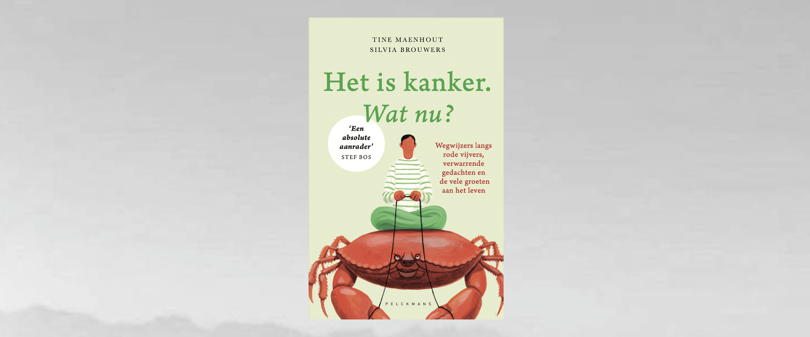
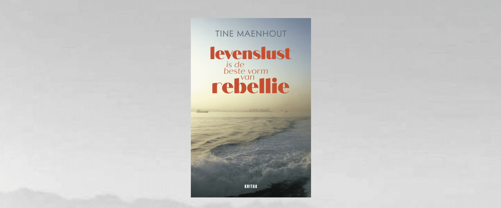
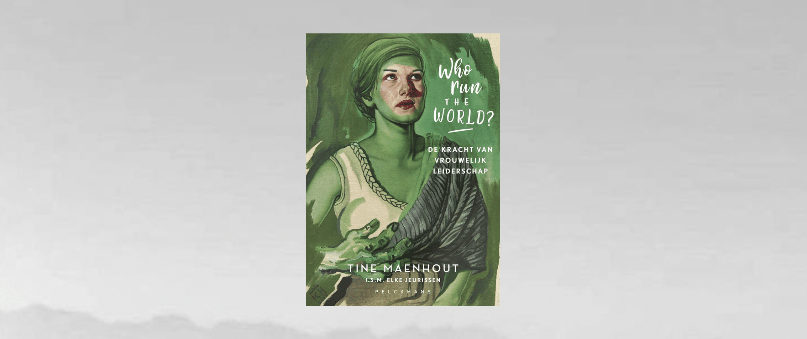
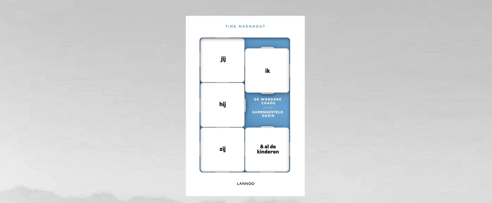
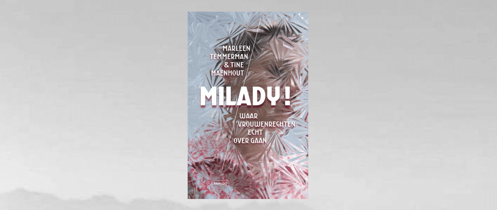

HET IS KANKER. WAT NU? Tine Maenhout & Silvia Brouwers

Wanneer kanker als een onaangekondigde gast aan je deur klopt, is het meteen duidelijk: het wordt een tocht door onbekend terrein, zowel voor jezelf als voor je omgeving. Verschillende gedachten struikelen over elkaar en honderden vragen stapelen zich op. Je lijf sputtert tegen, je hoofd slaat op hol.
Hoewel het traject voor iedereen anders loopt, zijn er emoties en ervaringen die bijna alle kankerpatiënten delen, ongeacht het type kanker of het type behandeling dat ze krijgen. En terwijl herkenbaarheid de grootste steun is voor de kankerpatiënt, is het niet voor iedereen makkelijk om over de ziekte te praten. Vandaar dit boek: een reisgids doorheen woest gebied waar leven en overleven dicht bij elkaar liggen. Het is kanker. Wat nu? is literaire non-fictie waarin verhalen laveren tussen honderden emoties, confronterende situaties, ‘momenten waar je door moet’ en de nodige ademruimte. Maar vooral: de woorden die je zelf niet altijd vindt en de gezochte herkenbaarheid op papier. Ze zijn een krachtig kompas om vanuit eigen kwetsbaarheid en moed de weg vooruit te blijven vinden. Voor iedereen die van veraf of dichtbij bij het onderwerp betrokken is.
OVER ‘HET IS KANKER. WAT NU?’
LEVENSLUST IS DE BESTE VORM VAN REBELLIE

Zullen we het leven in al zijn complexiteit vieren in plaats van het te vrezen? We weten hoe kort en broos het kan zijn. Zullen we onze prioriteiten herschikken en veerkracht, solidariteit en nieuwsgierigheid het laten halen op angst en agressie?
Het leven is onvoorspelbaar en daagt ons uit. Soms is er verwarring, soms zitten we vast. Soms sturen we bij en soms gaan we met dubbele moed gewoon verder. Als het klopt wat we doen, dan volgt het leven met volle kracht en groeit datgene wat moet groeien.
Maar er is lef voor nodig om op koers te blijven, focus en moed. Durven we het leven recht in de ogen kijken, persoonlijke en maatschappelijke problemen vanuit de kern aanpakken en met alle moed kiezen voor transformatie, nieuwe evenwichten en frisse inzichten?
Als je onbekommerd alles geeft, als je kiest voor de weg vooruit, voel je het leven door je heen stromen. Dan kom je tot de essentie, waar ideeën kiemen, het leven herademt en de sterren fonkelen.
Wat is het leven waard als het niet geleefd wordt? De verhalen in het boek balanceren tussen fictie en non-fictie. Zoals het leven zelf.
koop ‘Levenslust is de beste vorm van rebellie’ hier
OVER ‘LEVENSLUST IS DE BESTE VORM VAN REBELLIE’
WHO RUN THE WORLD?

U kent ze wel: de foto’s waarop topfiguren poseren op een trap. De grootste diversiteit in dergelijke groepsportretten zit vaak in de kleur maatpakken van deze overwegend, grijzende, blanke mannen. Het zijn beelden die niet stroken met de maatscahappelijke realiteit. Tine Maenhout toont in Who run the world? wat het belang én de kracht is van meer vrouwelijk leiderschap. Met een hoger aantal vrouwen aan het roer van de samenleving krijg je een diversiteit aan opinies en competenties. Stereotiepe denkpatronen rond zowel gender, bestuur en maatschappelijke relevantie worden uitgedaagd en creativiteit, productiviteit en innovatie kunnen floreren.
Inspirerende vrouwen als Ann Caluwaerts, Meyrem Almaci, Françoise Chombar, Catherine De Bolle, Chantal Pattyn, Marleen Temmerman, Assita Kanko en velen anderen delen hun persoonlijk verhaal. In alle openheid schetsen ze de kansen, uitdagingen en ervaringen die hun eigen parcours kenmerkten. Who run the world? is een boek voor vrouwen én mannen die geloven dat inclusief bestuur met respect voor individuele ontwikkeling in alle domeinen van de samenleving een troef is voor de toekomst.
koop ‘Who run the world?’ hier
JIJ, IK, HIJ, ZIJ EN AL DE KINDEREN

‘In elk nieuw gezin is er bagage. Minstens een van de partners heeft kinderen. Dus heeft minstens een van de partners een relatiebreuk achter de rug. Het is belangrijk om daar rekening mee te houden. Want wie een geschiedenis heeft, schrijft het heden met meer kleur. Frisse kleuren in het beste geval. Maar ook grijs en zwart behoren tot het palet. Je wereld is even een doolhof en er is geen kaart die aangeeft welke weg je moet volgen. Ieder verhaal is anders.’
Naar schatting één op de tien kinderen leeft in een samengesteld gezin. Dat is niet altijd vanzelfsprekend. Partners, ex-partners, kinderen en stiefkinderen met verschillende belangen, emoties en loyaliteiten zoeken samen naar een balans. Journaliste Tine Maenhout ging op basis van haar eigen ervaringen praten met ervaringsdeskundigen en experts over wat het betekend om in een samengesteld gezin op te groeien. Het resultaat is een herkenbare zoektocht naar handvaten om een nieuw gezin vorm te geven. Want hoe kan iedereen – ouders, kinderen, grootouders – zijn plek vinden in het nieuwe gezin? Is de maatschappij al voldoende afgestemd op veranderende gezinsvormen? Zijn samengestelde gezinnen zo nieuw dat we nog niet goed weten hoe we ermee moeten omgaan? En waarom is het soms zo leuk, soms zo vreemd en soms zo moeilijk om een nieuw gezin op te bouwen?
koop ‘Jij, ik, hij, zij en al de kinderen’ hier
OVER ‘JIJ, IK, HIJ, ZIJ EN AL DE KINDEREN’
MILADY! WAAR VROUWENRECHTEN OVER GAAN Marleen Temmerman & Tine Maenhout

Vrouwenrechten. Het is een thema dat helaas nog altijd brandend actueel is. Overal ter wereld zijn vrouwen het slachtoffer van tal van vormen van discriminatie en van ongelijkheid, zowel in hun beroepsleven als op familiaal, sociaal of politiek vlak. De rechten waarvoor vrouwen wereldwijd vechten, zijn dan ook erg uiteenlopend. In 1994 gaf de internationale gemeenschap tijdens de Conferentie van Caïro het startsein om de strijd voor betere vrouwenrechten op te voeren. Twintig jaar later maken Marleen Temmerman en Tine Maenhout een stand van zaken op en vertellen waar vrouwenrechten nu eigenlijk echt over gaan.
Journaliste Tine Maenhout trok naar het opvangcentrum voor slachtoffers van geweld van Marleen Temmerman in Kenia. De verhalen die ze daar optekende, vormden de basis voor een zoektocht naar de historische en culturele wortels die aan de grondslag liggen van geweld tegen vrouwen. Want vrouwenrechten zijn een stuk complexer dan ze op het eerste gezicht lijken. Pas als die complexiteit ten volle wordt onderkend, kunnen er echt stappen vooruit gezet worden. Aan de hand van gesprekken met vooraanstaande experts proberen Tine en Marleen daarom het begrip ‘vrouwenrechten’ verder scherp te stellen. Het resultaat van hun zoektocht is een boeiend samengaan van verhalen, stemmen en tegenstemmen, meningen en discours over de vele verschillende facetten van; vrouwenrechten wereldwijd. Met bijdragen van Meyrem Almaci, Sultan Balli, Eva Brems, Marleen Bosmans, Vicky Claeys, Renaat Devisch, Dirk De Wachter, Gie Goris, Peter Gichangi, Peter Piot, Patsy Sörensen, Miet Smet, Koen Stroeken, Etienne Vermeersch en Rudi Vranckx.
koop ‘Milady!’ hier